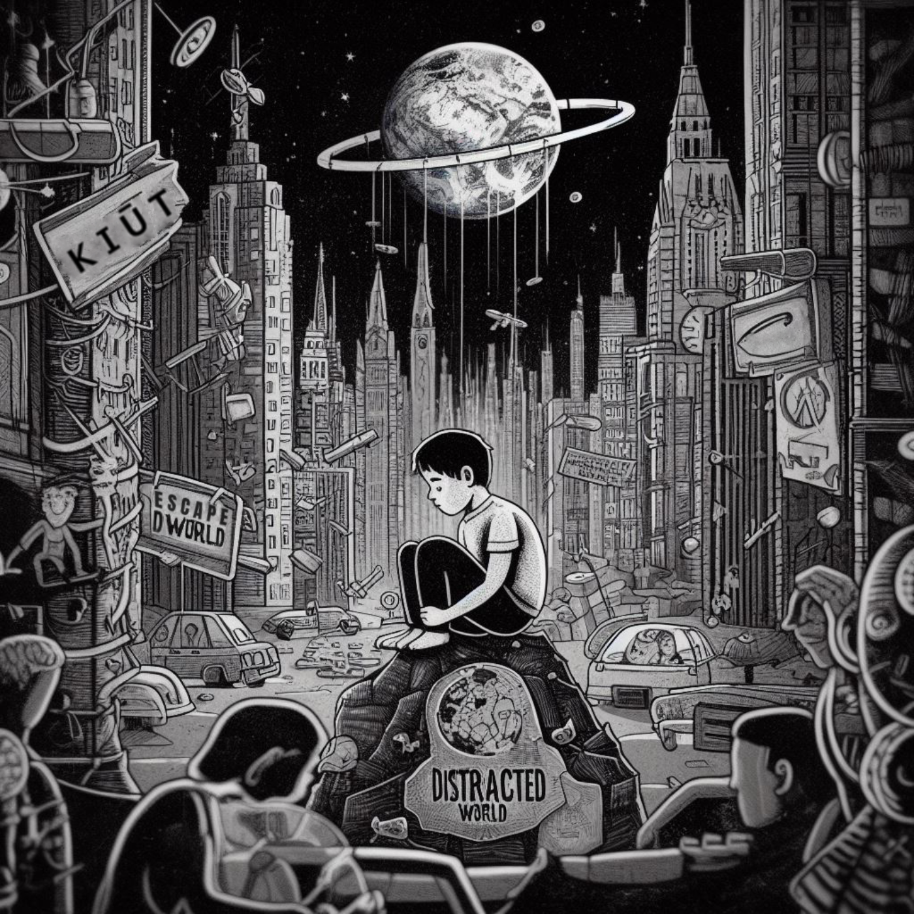
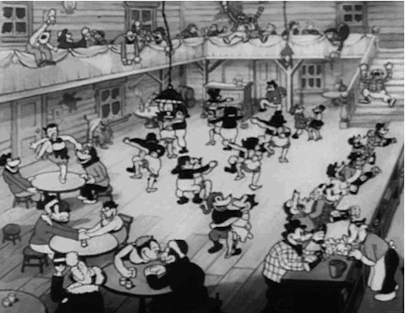

Imagine going back in time, like in old black-and-white cartoons! Radios played jazz, but just like today, people often felt lost because of *distractions*.
This website is like a map to help you find your way when your brain feels pulled everywhere at once. Here, we learn how to quiet the noise around us, focus our minds, and get to know ourselves better.
What is 'Distracted World'? It's a special way to think about how we can *wake up* and escape the things that stop us from doing our best work or reaching our goals. Things like getting easily side-tracked or spending too much time scrolling can really hold us back.
This site is full of ideas and information to help you improve yourself and grow. Becoming great isn't instant magic! It comes from the small, good choices and actions you take every single day.
Sometimes, it feels like our minds are always buzzing, looking for the next notification or exciting thing. This can make it hard to concentrate. But you *can* get your focus back! You can reset your mind and become the amazing person you're meant to be. It's time to level up!
Meet Di-Mind! He's a special character here to help you on this journey. Want to know more about him and how he helps organize thoughts? Check out the 'Organized WORLD' section!
Distracted WORLD
In a Distracted world, people often escape their day-to-day struggles by being preoccupied with the wrong things...
Organized WORLD (Meet Di-Mind)
In the black-and-white world of the 1930s, where jazz tunes float through the air... Meet Di-Mind...
Blog
Latest thoughts, insights, and updates from the world of Ki, focus, and escaping distractions...
Looking for wallpapers?
Betty Boop
Betty Boop and Bimbo
1933 - Fleischer Studios
Bosko
Bosko the Talk-Ink Kid
1930 - Harman-Ising
Felix The Cat
Felix The Cat
1925 - Pat Sullivan
Flip the Frog
Flip the Frog
1930 - Ub Iwerks
Willie Whopper
Willie Whopper
1933 - Ub Iwerks
Cubby Bear
Cubby Bear
1933 - Van Beuren Studios
Oswald the Lucky Rabbit
Oswald the Lucky Rabbit
1927 - Disney/Lantz
Early Mickey Mouse
Steamboat Willie
1928 - Disney
Silly Symphonies
Silly Symphonies
1929 - Disney
IN A DISTRACTED WORLD...

In a Distracted World, people often Escape their day-to-day struggles by being preoccupied with the wrong things.
Entering the state of Ki means radiating the highest Energy, Frequency, and Vibration to attract the right things into their lives. They become magnets. They need to rewire their Ki and reprogram their minds.
Once people understand that 95% of success is mindset, they realize how little inner work they do.
Success comes down to many small habits that form big habits. It's not one big thing or an overnight achievement. It's about thinking, believing, and acting in a certain way that creates these habits. It's a step-by-step process of understanding and trusting themselves and the process.
YOU MUST DECIDE NOW!
To become exceptional, focus on inner work, not just your IQ, but also your EQ and body feedback. Work intuitively.
The Mind and the Body should be in balance. A healthy mind and a healthy body create a healthy lifestyle. Once you are in balance and develop your mind and skill-set, you start to notice that you attract certain things in your life.
Visualize, grow, and develop your life. Self-analyze, self-reflect, and become your best self by updating your system that runs old, outdated beliefs. Update your Operating System (Your Mind) and quit having limiting beliefs. Life is a game. Learn to play it. Hack the system by reprogramming yourself.
We exist in an era full of distractions. It's challenging to accomplish tasks when our minds are constantly occupied with various things.
It's TIME To... ESCAPE This Distracted WORLD and... ENTER A New STATE of Consciousness
Is This You?
Do you feel stuck, not knowing what to do? ...it's time to escape the system designed to distract you!
Di-Mind isn't just a character; he's a reminder, a bot with a purpose. Every hour, his globe head lights up, urging you with a voice straight from the 1930s, "What are your goals for today? List them, my friend!"
1.
2.
3.
...
10.?
With batteries or a charge, Di-Mind keeps you on track. He'll even read you audiobooks, making your daily grind a bit more bearable. But at the end of the day, at 23:30, he'll ask, "Have you completed your tasks?"
If you've succeeded, Di-Mind sings a jolly tune, celebrating your achievements. But if you falter, his globe turns a fiery red, and with a voice that could belong to a stern 1930s schoolmaster, he'll give you a piece of his mind, not with harsh words, but with the kind of chiding that makes you laugh and then work harder.
The Tale of Di-Mind in Distracted WORLD
In the black-and-white world of the 1930s, where jazz tunes float through the air and every sound crackles with life, there lies the Distracted WORLD. Here, everyone is lost in a maze of noise and distraction, living in a matrix of their own making.
At the heart of this world is Di-Mind, a peculiar figure with a globe for a head. Di-Mind is the beacon of hope, the guide to escape the endless rat race. With a simple flick of a switch on his chest, Di-Mind transforms from a Distracted to a Disciplined Mind, showing everyone the way out.
The Switch

The Adventure of Di-Mind
In the black and white land of Distracted WORLD, there lived Di-Mind, a fellow with a globe for a head and a brain full of dreams, but oh, how easily those dreams got lost in the noise! This place was full of NPCs, folks who just wandered around, not really doing much, caught in their own little worlds of distraction.
Di-Mind, he was different. He wanted to achieve, to be someone, to make his mark. But every day was a battle. The radio blared with jazz that danced away his focus, the newspapers screamed headlines that weren't his to worry over, and the chatter of the street was like a never-ending spell of confusion.
He would start his day with a list of goals, but by noon, he'd find himself staring at the clouds, lost in thought about anything but what he needed to do. It was like living in a maze where every turn led back to the start.
Until one day, something magical happened. A little switch, hidden beneath the chaos of his thoughts, suddenly glowed with a bright, warm light. It was as if the sun had decided to shine inside his head. Di-Mind reached out, flicked the switch, and click—the world changed.
Suddenly, the jazz became a rhythm for his work, the headlines inspired him, and the chatter of the NPCs turned into whispers of encouragement. His globe head spun around, and he felt a connection with everything around him, like he was one with the universe.
Now, Di-Mind could see through the distractions. Each moment was clear, each goal within reach. He danced through his tasks with the grace of a 1930s star, his globe head lighting up with every small victory. The NPCs, they watched in awe. Here was someone who had cracked the code to the matrix of distraction.
Di-Mind became a legend in Distracted WORLD, not just for his discipline but for how he turned distractions into tools for success. And every now and then, when someone else felt lost in the noise, Di-Mind would share his secret. "Look for the switch," he'd say, "it's there, waiting for you to make your world light up too."
And so, in this world where time seemed to stand still, Di-Mind became the beacon, the hero who showed everyone that even in the most distracted of places, you could find your path, light up your mind, and become one with the universe, one task at a time.
But the real magic, the key to Di-Mind's newfound joy, was persistence. He learned that sticking to his goals, day in and day out, was what truly mattered. He stopped focusing on unnecessary things, tuning out the noise that once distracted him. Instead, he had a real goal in mind, a clear vision of what he truly wanted to achieve. This routine, this steady rhythm of doing, was what brought him back to happiness.
With persistence, Di-Mind wasn't just surviving in Distracted WORLD; he was thriving, proving that with every small, persistent step, one could dance their way to bliss.